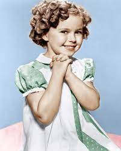
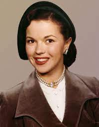
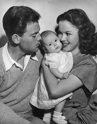

Shirley Temple
Biografia de Shirley Temple
Um pouco de sua história...
Atriz norte-americana
Por Dilva Frazão
Última atualização: 13/05/2021
Biografia de Shirley Temple
Shirley Temple, (1928-2014) foi uma atriz, dançarina e cantora norte-americana.
A mais jovem atriz a ganhar um Oscar especial – tinha apenas seis anos quando recebeu uma miniatura da estatueta.
Foi embaixadora dos Estados Unidos em Gana e na antiga Tchecoslováquia.
Shirley Temple Black nasceu em Santa Mônica, Califórnia, nos Estados Unidos, no dia 23 de abril de 1928.
Seu pai, George Francis Temple, trabalhava em um banco e sua mãe, Gertrudes Amélia era apaixonada por dança.
Em 1931, sua família foi morar em Los Angeles, onde Shirley com apenas três anos foi matriculada na Meglin’s Dance School.
INÍCIO DE CARREIRA
Enquanto estava dançando na escola, Shirley foi observada por dois produtores da Educational Film Corporation, que iria lançar uma série de curtas-metragens, intitulada “Baby Burlesks”.
Em 1932, Shirley foi contratada e atuou em alguns filmes, dançando e sapateando.
Em seguida, atuou em Frolics of Uouth, interpretando Mary Lou, uma menina de família suburbana.
No mesmo ano, Shirley foi emprestada à Tower Productions para um pequeno papel em seu primeiro longa-metragem, “The Red-Haired Alibi”.
Em 1933, com a falência da Educational Film, Shirley foi contratada por um grande estúdio, a Fox.
Sua estreia foi em “Alegria de Viver” (1934), quando se destacou não só pela atuação, mas também por seus números de dança.
Com seus inconfundíveis cachos dourados, rosto de boneca e uma grande simpatia, ela rapidamente se tornou um alento para o país, que estava mergulhado na Grande Depressão.
Ainda em 1934, Shirley foi emprestada para a Paramount para estrelar em “Little Miss Marker” (Dada em Penhor).
BABY OSCAR
Shirley atuou em um filme atrás do outro – foram 14 curtas-metragens e 43 longas-metragens.
“Bright Eyes” (Olhos Encantadores), 1934, foi o primeiro longa-metragem especialmente desenvolvido para Shirley.
Em 1935, Shirley atuou em: A Nossa Garota, A Pequena Órfã, A Mascote do Regimento e Pobre Menina Rica.
Nesse mesmo ano, com apenas seis anos, Shirley Temple foi a primeira atriz mirim a ganhar o “Baby Oscar” - uma estatueta especial com metade do tamanho de um Oscar normal.
Em 1936, Shirley atuou em Princesinha das Ruas e Pequena Clandestina.
No ano seguinte atuou em Heidi (1937) e A Queridinha da Vovô (1937).
Entre 1935 e 1938, a atriz foi campeã de bilheterias nos Estados Unidos, ultrapassando as produções com grandes estrelas de Hollywood, como Clark Gable, Bing Crosby, Robert Taylor e Gary Cooper.
A atriz era conhecida como “A Queridinha da América”.
O presidente dos Estados Unidos entre 1933 e 1945, Franklin D. Roosevelt chegou a declarar que “desde que nosso país tenha Shirley Temple, nós vamos ficar bem”.
ADOLESCÊNCIA
Em 1940, Shirley atuou em O Pássaro Azul e Mocidade, filmes que não fizeram o sucesso esperado.
Nesse mesmo ano, a atriz saiu da Twentieth Centure Fox e com 12 anos, foi estudar na Westlake, uma escola localizada em Los Angeles.
Em 1941, Shirley foi contratada pela MGM, mas atuou apenas em um filme, “Kathlen", uma comédia dramática.
Em 1942 estrelou em “Miss Annie Rooney”, produzido pela United Artists”, mas o filme não obteve sucesso.
Em 1944, depois de dois anos sem atuar, Shirley assinou um contrato de quatro anos com o produtor David O. Selznick.
Atuou em dois filmes bem sucedidos: Since You Went Away e I’ll Be Seeing You.
Nessa época, Shirley foi emprestada a outros estúdios e atuou em “Ninguém Vive Sem Amor (1945), “O Solteirão Cobiçado” (1947), ao lado de Myrna Loy e Cary Grant e “Sangue de Heróis (1948), ao lado de John Wayne, Henry Fonda e John Agar.
Seu último grande filme foi “A Kiss for Corliss” (1949). Com 22 anos, decidiu abandonar as telas.
CARREIRA NA TV


Entre janeiro de 1958 e setembro de 1961, Shirley Temple apresentou e narrou uma bem sucedida série de conto de fadas, na NBC, intitulada “Livro de Histórias de Shirley Temple.
Shirley apresentou dezesseis episódios, que tinham uma hora de duração e atuou em três deles.
DIPLOMATA
Em 1967, Shirley se candidatou ao Congresso dos Estados Unidos pelo Partido Republicano, mas não se elegeu.
Entre 1969, Shirley foi nomeada, pelo presidente Richard Nixon, delegada da 24.ª Assembleia Geral das Nações Unidas.
Foi nomeada embaixadora dos Estados Unidos em Gana, pelo presidente Gerald Ford, onde permaneceu entre 1974 a 1976.
Em 1976 ela foi a primeira mulher nomeada Chefe de Protocolo dos Estados Unidos e ficou encarregada dos preparativos para a cerimônia e o baile de posse do presidente Jimmy Carter.
Sirley serviu como embaixadora dos Estados Unidos na antiga Tchecoslováquia, entre 1989 e 1992.
HOMENAGENS
Em 1960, ganhou uma estrela na Calçada da Fama de Hollywood.
Em 1998, a atriz foi considerada uma das grandes estrelas do cinema de todos os tempos pela Revista Premiere e pela Entertainmente Weekly.
Em 2006, ganhou um Prêmio Especial pelo Conjunto da Obra, do Sindicato de Atores dos Estados Unidos.
Figurou na lista das 50 grandes lendas do cinema, realizada pelo American Film Institute.
VIDA PESSOAL
 Em 1945, com 17 anos, Sirley Temple se casou com Jack Agar e tiveram uma filha chamada Linda Susan, mas só ficaram juntos por quatro anos.
Em 1950, se casou com Charles Blak, ex-oficial da Marinha.
Tiveram dois filhos, Charlie Jr. E Lori.
Em 1972, Shirley Temple foi diagnosticada com câncer da mama.
Foi uma das primeiras celebridades a falar abertamente sobre a doença e a superação do problema.
MORTE
Shirley Temple faleceu em Woodside, Califórnia, nos Estados Unidos, no dia 10 de fevereiro de 2014, em consequência de uma doença nos pulmões.
Temple evitava fumar em público, mas foi fumante desde sua adolescência.
Biografia
Mais curiosidades sobre a vida e obra de Shirley Temple no site da Amazon: aqui!